図1-1: 開発用のパソコンで作り、会社のサーバーに建てる
色の付いた枠のコードの、右上の「コピー」ボタンを押してください。コピーしたら、ブラウザーの「戻る」で PDF に戻れます。
いよいよ、練習アプリ（依頼・承認アプリ）を作ります。06 は 2 つに分かれます。
練習のコードは samples/06_django_react/backend/ にあります。会社のサーバー（onprem の 05）に、そのまま建てられる形で書いています（00 学習ガイドの 3.1）。この巻の結果と画面の写しは、Django 5.2.18・PostgreSQL 18.3 で実際に動かした物です。
backend\
├─ manage.py
├─ requirements.txt 使う部品と版（onprem の 05 の 6.2 と同じ）
├─ dev.ps1・dev.env.example 開発用のパソコンで動かす道具と、設定の見本（2 章）
├─ config\
│ ├─ settings.py 設定（環境変数から読む。3 章）
│ └─ urls.py URL の表
├─ accounts\ 社員（従業員番号でログイン）
│ ├─ models.py 社員のモデル（4 章）
│ ├─ views.py ログイン・ログアウトの API
│ └─ management\commands\
│ ├─ import_employees.py 社員の CSV の取り込み（9 章）
│ └─ seed_demo.py 練習用の社員を作る
└─ workflow\ 依頼と回覧
├─ models.py 依頼・回覧・添付・記録のモデル（4 章）
├─ services.py 状態を変える処理（5・6 章）★いちばん大事
├─ approve_views.py メールの URL から開く承認の画面（6 章）
├─ validators.py 図面と添付の確かめ（7 章）
├─ api.py・serializers.py React の画面が呼ぶ API（8 章）
├─ templates\workflow\ 承認の画面とメールのひな形
├─ management\commands\send_daily_reminders.py 毎朝の通知（10 章）
└─ tests.py 自動のテスト（11 章）
▶ 準備: 00 の 6.1（資料のフォルダ）・6.4（Python 3.14）・6.5（PostgreSQL）。04・05 を終えていれば、Python はもう入っています。この巻のコマンドは、PowerShell で資料のフォルダにいるところから打ちます。
開発用のパソコンにも、会社のサーバーと同じ PostgreSQL 18 を入れます（入れ方は onprem の 04 の 5 章と同じ）。開発用のデータベースとユーザーを作ります。
-- postgres でつないで打つ（onprem の 02 の 2.2）
CREATE ROLE webapp_dev_app LOGIN CREATEDB;
\password webapp_dev_app
CREATE DATABASE webapp_dev OWNER webapp_dev_app ENCODING 'UTF8' TEMPLATE template0;
CREATEDB は、自動のテストのためです。Django のテストは、テスト専用のデータベース（test_webapp_dev）を作ってから動き、終わったら消します。この権限が無いと、テストが「permission denied to create database」で止まります。会社のサーバーのユーザーには付けません。cd webapp_learning\samples\06_django_react\backend
py -3.14 -m venv .venv
.\.venv\Scripts\python.exe -m pip install -r requirements.txt
Copy-Item dev.env.example dev.env # dev.env のパスワードを、2.1 で決めた物に書きかえる
requirements.txt:
Django==5.2.18
djangorestframework==3.18.3
psycopg[binary]==3.3.6
whitenoise==6.12.0
waitress==3.0.2
tzdata==2026.6
dev.env.example（写して dev.env にする。dev.env は Git に入れない）:
# 開発用のパソコンの設定。このファイルを dev.env という名前で写して、パスワードなどを書きかえる。
# dev.env は Git に入れない（.gitignore に書いてある）。
DJANGO_DEBUG=true
DJANGO_SECRET_KEY=dev-only-not-a-secret
DJANGO_ALLOWED_HOSTS=127.0.0.1,localhost
APP_BASE_URL=http://127.0.0.1:8000
DB_NAME=webapp_dev
DB_USER=webapp_dev_app
DB_PASSWORD=ここに自分で決めたパスワード
DB_PORT=5432
EMAIL_BACKEND=django.core.mail.backends.filebased.EmailBackend
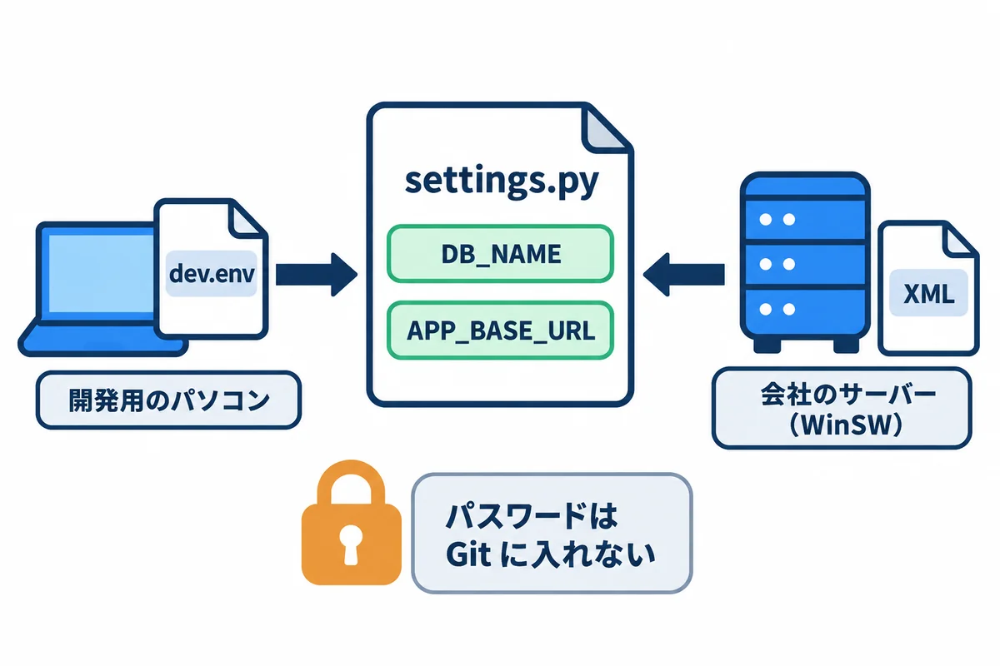
dev.ps1（「UTF-8 (BOM 付き)」で保存。onprem の 01 の 3.7）:
# 開発用のパソコンで、dev.env の設定を読み込んでから manage.py を動かす（必ず「UTF-8 (BOM 付き)」で保存する）
# 使い方: .\dev.ps1 migrate .\dev.ps1 runserver .\dev.ps1 test
# サーバーでは、これではなく onprem の 05 の manage.ps1（WinSW の XML を読む）を使う
param([Parameter(ValueFromRemainingArguments = $true)] [string[]] $ManageArgs)
$ErrorActionPreference = "Stop"
$envFile = Join-Path $PSScriptRoot "dev.env"
if (-not (Test-Path $envFile)) { throw "dev.env がありません。dev.env.example を写して作ってください。" }
$names = @()
foreach ($line in Get-Content $envFile -Encoding UTF8) {
if ($line -match '^\s*#' -or $line -notmatch '=') { continue }
$name, $value = $line -split '=', 2
Set-Item -Path "Env:$($name.Trim())" -Value $value.Trim()
$names += $name.Trim()
}
Push-Location $PSScriptRoot
try {
& "$PSScriptRoot\.venv\Scripts\python.exe" manage.py @ManageArgs
$code = $LASTEXITCODE
} finally {
# パスワードなどを窓に残さない
foreach ($n in $names) { Remove-Item -Path "Env:$n" -ErrorAction SilentlyContinue }
Pop-Location
}
exit $code
会社のサーバーでは、これと同じ働きをする manage.ps1（WinSW の XML を読む。onprem の 05 の 9.4）を使います。どちらも、終わったらパスワードを窓に残しません。
.\dev.ps1 migrate # テーブルを作る
.\dev.ps1 seed_demo # 練習用の社員を 5 人作る（開発用のパソコンだけ）
.\dev.ps1 runserver # 開発用のサーバー（http://127.0.0.1:8000/）
.\dev.ps1 test # 自動のテスト
PowerShell の落とし穴:
.\dev.ps1 test -v 2のように-vを付けると、PowerShell が自分のための指定（-Verbose）として受け取ってしまい、Django に届きません（試して確かめた）。--verbosity 2のように、長い書き方を使います。
config/settings.py:
"""依頼・承認アプリの設定。
onprem の 05（Django＋React版）の形で、会社の Windows Server に建てる前提で書いている。
秘密の値と、サーバーごとに違う値は、環境変数から読む。
- 本番・検証: WinSW の XML の <env> に書く（onprem の 05 の 9.2）
- 開発用のパソコン: dev.ps1 が決める（この巻の 2 章）
"""
import os
import re
from pathlib import Path
BASE_DIR = Path(__file__).resolve().parent.parent
def env(name: str, default: str | None = None) -> str:
"""環境変数を読む。無くて、決まりの値も無いときは、起動を止める"""
value = os.environ.get(name, default)
if value is None:
raise RuntimeError(f"環境変数 {name} がありません")
return value
SECRET_KEY = env("DJANGO_SECRET_KEY")
DEBUG = env("DJANGO_DEBUG", "false").lower() == "true"
# 社員が開く名前（例: webapp.example.local）。IIS が名前をそのまま渡す（onprem の 04 の 8.3）
ALLOWED_HOSTS = env("DJANGO_ALLOWED_HOSTS").split(",")
CSRF_TRUSTED_ORIGINS = [f"http://{host}" for host in ALLOWED_HOSTS]
# メールに書く URL の頭（例: http://webapp.example.local）
APP_BASE_URL = env("APP_BASE_URL")
INSTALLED_APPS = [
"django.contrib.admin",
"django.contrib.auth",
"django.contrib.contenttypes",
"django.contrib.sessions",
"django.contrib.messages",
"django.contrib.staticfiles",
"rest_framework",
"accounts",
"workflow",
]
MIDDLEWARE = [
"django.middleware.security.SecurityMiddleware",
"whitenoise.middleware.WhiteNoiseMiddleware", # SecurityMiddleware のすぐ後
"django.contrib.sessions.middleware.SessionMiddleware",
"django.middleware.common.CommonMiddleware",
"django.middleware.csrf.CsrfViewMiddleware",
"django.contrib.auth.middleware.AuthenticationMiddleware",
"django.contrib.messages.middleware.MessageMiddleware",
"django.middleware.clickjacking.XFrameOptionsMiddleware",
]
ROOT_URLCONF = "config.urls"
TEMPLATES = [
{
"BACKEND": "django.template.backends.django.DjangoTemplates",
"DIRS": [BASE_DIR / "frontend_dist"], # React の成果物の index.html（後編）
"APP_DIRS": True,
"OPTIONS": {
"context_processors": [
"django.template.context_processors.request",
"django.contrib.auth.context_processors.auth",
"django.contrib.messages.context_processors.messages",
],
},
},
]
WSGI_APPLICATION = "config.wsgi.application"
# データベースは、サーバーの中の PostgreSQL（onprem の 04 の 5 章）
DATABASES = {
"default": {
"ENGINE": "django.db.backends.postgresql",
"HOST": "127.0.0.1",
"PORT": env("DB_PORT", "5432"),
"NAME": env("DB_NAME"),
"USER": env("DB_USER"),
"PASSWORD": env("DB_PASSWORD"),
"CONN_MAX_AGE": 60,
}
}
AUTH_USER_MODEL = "accounts.User" # 従業員番号でログインする、自分のユーザーのモデル
AUTH_PASSWORD_VALIDATORS = [
{"NAME": "django.contrib.auth.password_validation.MinimumLengthValidator", "OPTIONS": {"min_length": 10}},
{"NAME": "django.contrib.auth.password_validation.CommonPasswordValidator"},
{"NAME": "django.contrib.auth.password_validation.NumericPasswordValidator"},
]
LANGUAGE_CODE = "ja"
TIME_ZONE = "Asia/Tokyo"
USE_I18N = True
USE_TZ = True
# 画面の部品（React の成果物）と管理画面の部品は、WhiteNoise が /static/ で配る（onprem の 05 の 6 章）
STATIC_URL = "/static/"
STATIC_ROOT = BASE_DIR / "staticfiles"
STATICFILES_DIRS = [p for p in [BASE_DIR / "frontend_dist"] if p.exists()]
STORAGES = {
"default": {"BACKEND": "django.core.files.storage.FileSystemStorage"},
"staticfiles": {"BACKEND": "whitenoise.storage.CompressedStaticFilesStorage"},
}
def _vite_hashed(path, url):
"""Vite が名前に指紋を付けたファイルは、ずっとキャッシュしてよい"""
return re.match(r"^.+[.-][0-9a-zA-Z_-]{8,12}\..+$", url)
WHITENOISE_IMMUTABLE_FILE_TEST = _vite_hashed
# 添付ファイルの置き場所（例: D:\webapp\prod\files）と、受け取る途中の一時ファイルの置き場所
MEDIA_ROOT = Path(env("DJANGO_MEDIA_ROOT", str(BASE_DIR / "media")))
FILE_UPLOAD_TEMP_DIR = os.environ.get("DJANGO_TMP_DIR")
DATA_UPLOAD_MAX_MEMORY_SIZE = 10 * 1024 * 1024 # 図面の JSON（5MB まで）を受け取れる大きさ
# ログイン: 60 分操作が無ければログアウト。HTTP で動かすので Secure は付けない（onprem の 05 の 8 章）
SESSION_COOKIE_AGE = 60 * 60
SESSION_SAVE_EVERY_REQUEST = True
SESSION_COOKIE_SECURE = False
CSRF_COOKIE_SECURE = False
SILENCED_SYSTEM_CHECKS = ["security.W004", "security.W008", "security.W012", "security.W016"]
# メール: 本番は Microsoft 365 の SMTP リレー（25 番・STARTTLS。onprem の 04 の 10 章、この資料の 09）
EMAIL_BACKEND = env("EMAIL_BACKEND", "django.core.mail.backends.smtp.EmailBackend")
EMAIL_FILE_PATH = BASE_DIR / "sent_mail" # 開発用（dev.ps1 は、メールをここにファイルで書く）
EMAIL_HOST = env("SMTP_HOST", "localhost")
EMAIL_PORT = int(env("SMTP_PORT", "25"))
EMAIL_USE_TLS = env("SMTP_USE_TLS", "true").lower() == "true"
EMAIL_TIMEOUT = 30
DEFAULT_FROM_EMAIL = env("MAIL_FROM", "noreply@example.com")
# 検証では、全部のメールをこの宛先に送る（社員に本物の依頼が届かないように。onprem の 04 の 10.4）
MAIL_REDIRECT_TO = os.environ.get("MAIL_REDIRECT_TO", "")
REST_FRAMEWORK = {
"DEFAULT_AUTHENTICATION_CLASSES": ["rest_framework.authentication.SessionAuthentication"],
"DEFAULT_PERMISSION_CLASSES": ["rest_framework.permissions.IsAuthenticated"],
}
# ログは画面（標準エラー出力）に出す。WinSW が D:\webapp\…\logs に書く（onprem の 05 の 12.2）
LOGGING = {
"version": 1,
"disable_existing_loggers": False,
"formatters": {"plain": {"format": "{asctime} {levelname} {name} {message}", "style": "{"}},
"handlers": {"console": {"class": "logging.StreamHandler", "formatter": "plain"}},
"root": {"handlers": ["console"], "level": "INFO"},
}
DEFAULT_AUTO_FIELD = "django.db.models.BigAutoField"
onprem の 05 の WinSW の XML と、同じ名前の環境変数を読みます。
| 環境変数 | 意味 | 開発用のパソコン（dev.env） | 会社のサーバー（XML。onprem の 05 の 9.2） |
|---|---|---|---|
DJANGO_SECRET_KEY |
秘密の値 | 練習用の値 | 長いでたらめな値（本番と検証で別） |
DJANGO_DEBUG |
エラーの詳しい画面を出すか | true |
書かない（false） |
DJANGO_ALLOWED_HOSTS |
受け付ける名前 | 127.0.0.1,localhost |
webapp.example.local |
APP_BASE_URL |
メールに書く URL の頭 | http://127.0.0.1:8000 |
http://webapp.example.local |
DB_NAME・DB_USER・DB_PASSWORD・DB_PORT |
データベース | webapp_dev |
webapp_prod など |
DJANGO_MEDIA_ROOT・DJANGO_TMP_DIR |
添付ファイル・一時ファイルの置き場所 | 書かない（backend\media） |
D:\webapp\prod\files・tmp |
EMAIL_BACKEND |
メールの送り方 | ファイルに書く（sent_mail\） |
書かない（SMTP で送る） |
SMTP_HOST・SMTP_PORT・MAIL_FROM |
Microsoft 365 の受付・25 番・送り主 | 書かない | onprem の 04 の 10 章 |
MAIL_REDIRECT_TO |
検証で、全部のメールを送る宛先 | 書かない | 検証だけに書く |
DJANGO_DEBUGを本番でtrueにしない: エラーのときに、設定やプログラムの中身が画面に丸見えになります（onprem の 05 の 14 章）。
from django.contrib.auth.models import AbstractBaseUser, BaseUserManager, PermissionsMixin
from django.db import models
class UserManager(BaseUserManager):
def create_user(self, employee_no: str, password: str | None = None, **extra):
user = self.model(employee_no=employee_no, **extra)
if password:
user.set_password(password) # パスワードは、そのままではなく、元に戻せない形にして保存する
else:
user.set_unusable_password()
user.save(using=self._db)
return user
def create_superuser(self, employee_no: str, password: str, **extra):
extra.update(is_staff=True, is_superuser=True, role=User.Role.ADMIN)
return self.create_user(employee_no, password, **extra)
class User(AbstractBaseUser, PermissionsMixin):
"""社員。従業員番号でログインする"""
class Role(models.TextChoices):
MEMBER = "member", "一般"
WORKER = "worker", "担当者" # 依頼に対応する部署の人
ADMIN = "admin", "管理者"
employee_no = models.CharField("従業員番号", max_length=6, unique=True)
name = models.CharField("氏名", max_length=50) # 「山田 太郎」の順でそのまま持つ
dept = models.CharField("所属", max_length=50, blank=True)
job_title = models.CharField("役職", max_length=50, blank=True)
email = models.EmailField("メールアドレス")
role = models.CharField("権限", max_length=10, choices=Role.choices, default=Role.MEMBER)
is_active = models.BooleanField("在籍", default=True)
is_staff = models.BooleanField("管理画面に入れる", default=False)
objects = UserManager()
USERNAME_FIELD = "employee_no"
EMAIL_FIELD = "email"
REQUIRED_FIELDS = ["name", "email"]
class Meta:
verbose_name = "社員"
verbose_name_plural = "社員"
ordering = ["employee_no"]
def __str__(self) -> str:
return f"{self.name}（{self.employee_no}）"
User を自分で作り直しています（USERNAME_FIELD = "employee_no"）。氏名は「山田 太郎」の順で 1 つの項目に持ちます（05 で、名・姓の順に出た問題を直した）。role）は「一般」「担当者」「管理者」の 3 つです。migrate の前に決めます（settings.py の AUTH_USER_MODEL）。あとから変えるのは、とても大変です。from django.conf import settings
from django.db import models
class Request(models.Model):
"""依頼 1 件"""
class Status(models.TextChoices):
CIRCULATING = "circulating", "回覧中"
RETURNED = "returned", "差し戻し中"
PULLED_BACK = "pulled_back", "引き戻し中"
APPROVED = "approved", "回覧完了"
IN_PROGRESS = "in_progress", "対応中"
DONE = "done", "完了"
WITHDRAWN = "withdrawn", "取り下げ"
title = models.CharField("件名", max_length=100)
detail = models.TextField("内容", blank=True)
due_date = models.DateField("希望の納期")
status = models.CharField("状態", max_length=20, choices=Status.choices, default=Status.CIRCULATING)
requester = models.ForeignKey(settings.AUTH_USER_MODEL, verbose_name="依頼者", on_delete=models.PROTECT, related_name="requests")
assignee = models.ForeignKey(
settings.AUTH_USER_MODEL, verbose_name="担当者", on_delete=models.PROTECT, null=True, blank=True, related_name="assigned"
)
drawing = models.JSONField("図面", null=True, blank=True)
return_comments = models.TextField("差し戻しのコメント", blank=True) # 差し戻すたびに追記する
round = models.PositiveSmallIntegerField("回覧の回数", default=1) # 出し直すたびに 1 増える
created_at = models.DateTimeField("作った日時", auto_now_add=True)
updated_at = models.DateTimeField("直した日時", auto_now=True)
class Meta:
verbose_name = "依頼"
verbose_name_plural = "依頼"
ordering = ["-created_at"]
def __str__(self) -> str:
return f"{self.pk} {self.title}"
class Step(models.Model):
"""回覧の 1 人分。承認の URL の指紋も、ここに持つ"""
class Decision(models.TextChoices):
WAITING = "waiting", "待ち"
APPROVED = "approved", "承認"
RETURNED = "returned", "差し戻し"
CANCELLED = "cancelled", "取り消し" # 引き戻し・差し戻しで、回ってこなくなった
request = models.ForeignKey(Request, verbose_name="依頼", on_delete=models.CASCADE, related_name="steps")
round = models.PositiveSmallIntegerField("回覧の回数")
order = models.PositiveSmallIntegerField("順番")
approver = models.ForeignKey(settings.AUTH_USER_MODEL, verbose_name="承認者", on_delete=models.PROTECT)
decision = models.CharField("結果", max_length=10, choices=Decision.choices, default=Decision.WAITING)
decided_at = models.DateTimeField("決めた日時", null=True, blank=True)
token_hash = models.CharField("URL の指紋", max_length=64, blank=True, db_index=True)
token_expires_at = models.DateTimeField("URL の期限", null=True, blank=True)
sent_at = models.DateTimeField("メールを送った日時", null=True, blank=True)
class Meta:
verbose_name = "回覧"
verbose_name_plural = "回覧"
ordering = ["request", "round", "order"]
constraints = [models.UniqueConstraint(fields=["request", "round", "order"], name="unique_step")]
def __str__(self) -> str:
return f"{self.request_id} の {self.round} 回目 {self.order} 番目"
class Attachment(models.Model):
"""添付ファイル（JPG・PNG・PDF。1 ファイル 10MB まで）"""
request = models.ForeignKey(Request, verbose_name="依頼", on_delete=models.CASCADE, related_name="attachments")
file = models.FileField("ファイル", upload_to="attachments/%Y/%m/")
original_name = models.CharField("元の名前", max_length=200)
size = models.PositiveIntegerField("大きさ（バイト）")
uploaded_at = models.DateTimeField("付けた日時", auto_now_add=True)
class Meta:
verbose_name = "添付ファイル"
verbose_name_plural = "添付ファイル"
class History(models.Model):
"""だれが、いつ、何をしたかの記録（あとから変えない）"""
request = models.ForeignKey(Request, verbose_name="依頼", on_delete=models.CASCADE, related_name="histories")
at = models.DateTimeField("日時", auto_now_add=True)
actor = models.ForeignKey(settings.AUTH_USER_MODEL, verbose_name="した人", on_delete=models.PROTECT, null=True)
action = models.CharField("したこと", max_length=50)
note = models.TextField("メモ", blank=True)
class Meta:
verbose_name = "記録"
verbose_name_plural = "記録"
ordering = ["at", "id"]
def __str__(self) -> str:
return f"{self.action}"
| モデル | 1 件は | 大事な項目 |
|---|---|---|
Request |
依頼 1 件 | status（7 つの状態）・round（何回目の回覧か）・drawing（図面の JSON）・return_comments（差し戻しのコメントの追記） |
Step |
回覧の 1 人分 | round・order（何番目）・decision（待ち・承認・差し戻し・取り消し）・token_hash（URL の文字列ではなく、その指紋）・token_expires_at（期限） |
Attachment |
添付ファイル 1 つ | ファイル・元の名前・大きさ |
History |
記録 1 行 | だれが・いつ・何をしたか（あとから変えない） |
JSONField で、そのままデータベースに入れます（PostgreSQL では jsonb の列になる）。Step の 1 行 1 行に持ちます。依頼が出し直されると、round が 1 増えて、新しい Step の行ができます（前の回の記録は残る）。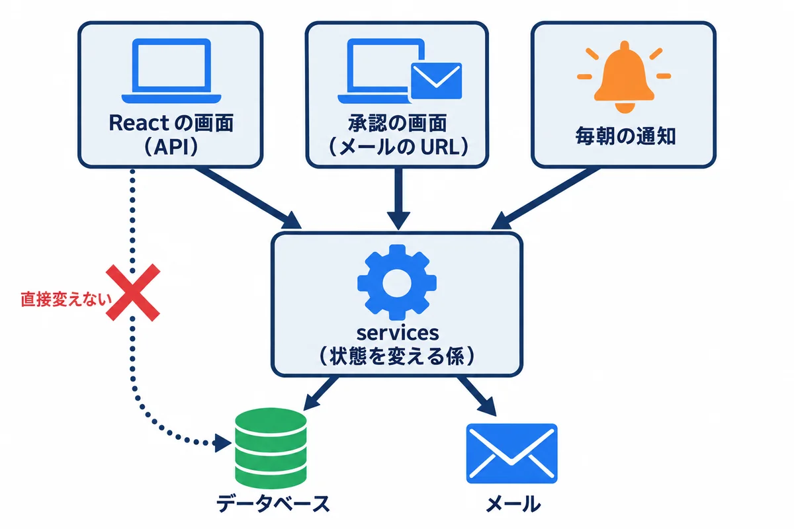
依頼の状態を変える入口は、3 つあります（React の画面・承認の画面・毎朝の通知）。それぞれが勝手に status を書きかえると、「メールを送り忘れた」「記録を残し忘れた」が起きます。そこで、状態を変える処理を services.py の関数に集め、入口からは関数を呼ぶだけにします。
workflow/services.py:
"""依頼の状態を変える処理を、ここに集める。
画面（API・承認の画面）からは、ここの関数だけを呼ぶ。状態を直接書きかえない。
どの関数も、1 つのトランザクションの中で動き、途中で失敗したら全部取り消す。
メールは、データベースへの保存が確定してから送る（transaction.on_commit）。
"""
import hashlib
import secrets
from dataclasses import dataclass
from datetime import timedelta
from django.conf import settings
from django.contrib.auth import get_user_model
from django.core.mail import send_mail
from django.db import transaction
from django.template.loader import render_to_string
from django.utils import timezone
from .models import History, Request, Step
User = get_user_model()
S = Request.Status
D = Step.Decision
TOKEN_DAYS = 14
MAX_APPROVERS = 3
class WorkflowError(Exception):
"""できない操作。文は、そのまま画面に出してよい"""
# ---------- 承認の URL ----------
def _hash(token: str) -> str:
return hashlib.sha256(token.encode()).hexdigest()
def _issue_url(step: Step) -> str:
"""推測できない文字列を作り、指紋だけを保存して、URL を返す（前の URL は使えなくなる）"""
token = secrets.token_urlsafe(32)
step.token_hash = _hash(token)
step.token_expires_at = timezone.now() + timedelta(days=TOKEN_DAYS)
step.sent_at = timezone.now()
step.save(update_fields=["token_hash", "token_expires_at", "sent_at"])
return f"{settings.APP_BASE_URL}/approve/{token}/"
@dataclass
class TokenCheck:
step: Step | None
message: str = "" # 使えないときの理由
def check_token(token: str, *, lock: bool = False) -> TokenCheck:
"""URL の文字列を調べる。使えなければ、理由の文を返す"""
qs = Step.objects.select_related("request", "approver", "request__requester")
if lock:
qs = qs.select_for_update()
step = qs.filter(token_hash=_hash(token)).first()
if step is None:
return TokenCheck(None, "この URL は使えません。")
if step.decision == D.APPROVED:
return TokenCheck(None, "この依頼は、承認済みです。")
if step.decision == D.RETURNED:
return TokenCheck(None, "この依頼は、差し戻し済みです。")
if step.decision == D.CANCELLED:
if step.request.status == S.PULLED_BACK:
return TokenCheck(None, "依頼者により引き戻されました。")
return TokenCheck(None, "この URL は、取り消されました。")
if step.token_expires_at and step.token_expires_at < timezone.now():
return TokenCheck(None, "この URL は、期限が切れています。管理者に再送を頼んでください。")
return TokenCheck(step)
# ---------- メール ----------
def _mail(to: str, subject: str, template: str, context: dict) -> None:
body = render_to_string(f"workflow/mail/{template}", context)
subject = f"【依頼・承認】{subject}"
if settings.MAIL_REDIRECT_TO: # 検証: 本物の宛先には送らず、決まった宛先へ
body = f"（検証のメールです。本来の宛先: {to}）\n\n{body}"
subject, to = f"【検証】{subject}", settings.MAIL_REDIRECT_TO
# 保存が確定してから送る。途中で取り消されたら、送らない
transaction.on_commit(lambda: send_mail(subject, body, None, [to]))
def _send_approval_mail(step: Step) -> None:
url = _issue_url(step)
r = step.request
_mail(step.approver.email, f"承認のお願い: {r.title}", "approval_request.txt",
{"step": step, "r": r, "url": url, "days": TOKEN_DAYS})
# ---------- 状態を変える操作 ----------
def _log(r: Request, actor, action: str, note: str = "") -> None:
History.objects.create(request=r, actor=actor, action=action, note=note)
def _check_approvers(requester, approver_ids: list[int]) -> list:
if not 1 <= len(approver_ids) <= MAX_APPROVERS:
raise WorkflowError(f"回覧者は 1〜{MAX_APPROVERS} 人にしてください。")
if len(set(approver_ids)) != len(approver_ids):
raise WorkflowError("同じ人を 2 回は選べません。")
if requester.pk in approver_ids:
raise WorkflowError("自分自身は回覧者にできません。")
users = {u.pk: u for u in User.objects.filter(pk__in=approver_ids, is_active=True)}
if len(users) != len(approver_ids):
raise WorkflowError("回覧者に、いない社員が入っています。")
return [users[i] for i in approver_ids]
def _start_round(r: Request, approvers: list) -> None:
steps = [Step.objects.create(request=r, round=r.round, order=i, approver=a) for i, a in enumerate(approvers, start=1)]
_send_approval_mail(steps[0])
@transaction.atomic
def submit(requester, *, title: str, detail: str, due_date, approver_ids: list[int], drawing=None) -> Request:
"""依頼を出す → 回覧中。1 人目に承認のお願いのメール"""
approvers = _check_approvers(requester, approver_ids)
r = Request.objects.create(requester=requester, title=title, detail=detail, due_date=due_date, drawing=drawing)
_start_round(r, approvers)
_log(r, requester, "依頼を出した")
return r
@transaction.atomic
def approve(token: str) -> Request:
"""承認 → 次の人へ。最後の人なら回覧完了"""
check = check_token(token, lock=True)
if check.step is None:
raise WorkflowError(check.message)
step = check.step
r = Request.objects.select_for_update().get(pk=step.request_id) # 同時に押されても 1 回だけ進める
# 指紋は消さずに残す。同じ URL をもう一度開いた人に「承認済みです」と知らせるため
step.decision, step.decided_at = D.APPROVED, timezone.now()
step.save(update_fields=["decision", "decided_at"])
_log(r, step.approver, f"承認（回覧者{step.order}）")
nxt = r.steps.filter(round=r.round, decision=D.WAITING).order_by("order").first()
if nxt:
_send_approval_mail(nxt)
else:
r.status = S.APPROVED
r.save(update_fields=["status", "updated_at"])
_mail(r.requester.email, f"回覧完了: {r.title}", "approved.txt", {"r": r})
for worker in User.objects.filter(role=User.Role.WORKER, is_active=True):
_mail(worker.email, f"新しい依頼: {r.title}", "new_request.txt", {"r": r})
return r
@transaction.atomic
def return_request(token: str, comment: str) -> Request:
"""差し戻し → 差し戻し中。コメントは【日時 回覧者n 氏名】を付けて追記する"""
if not comment.strip():
raise WorkflowError("差し戻すときは、理由を書いてください。")
check = check_token(token, lock=True)
if check.step is None:
raise WorkflowError(check.message)
step = check.step
r = Request.objects.select_for_update().get(pk=step.request_id)
now = timezone.localtime()
step.decision, step.decided_at = D.RETURNED, now
step.save(update_fields=["decision", "decided_at"])
r.steps.filter(round=r.round, decision=D.WAITING).update(decision=D.CANCELLED)
line = f"【{now:%m/%d %H:%M} 回覧者{step.order} {step.approver.name}】{comment.strip()}"
r.return_comments = f"{r.return_comments}\n{line}".strip()
r.status = S.RETURNED
r.save(update_fields=["status", "return_comments", "updated_at"])
_log(r, step.approver, f"差し戻し（回覧者{step.order}）", comment.strip())
_mail(r.requester.email, f"差し戻し: {r.title}", "returned.txt", {"r": r, "line": line})
return r
def _lock_own(user, request_id: int) -> Request:
r = Request.objects.select_for_update().get(pk=request_id)
if r.requester_id != user.pk:
raise WorkflowError("自分の依頼ではありません。")
return r
@transaction.atomic
def pull_back(user, request_id: int) -> Request:
"""引き戻し（回覧中だけ）→ 引き戻し中。承認待ちの人の URL は使えなくなる"""
r = _lock_own(user, request_id)
if r.status != S.CIRCULATING:
raise WorkflowError(f"「{r.get_status_display()}」の依頼は引き戻せません。")
r.steps.filter(round=r.round, decision=D.WAITING).update(decision=D.CANCELLED)
r.status = S.PULLED_BACK
r.save(update_fields=["status", "updated_at"])
_log(r, user, "引き戻した")
return r
@transaction.atomic
def resubmit(user, request_id: int, *, title: str, detail: str, due_date, approver_ids: list[int], drawing=None) -> Request:
"""直して出し直す → 回覧中。最初の回覧者からやり直す"""
r = _lock_own(user, request_id)
if r.status not in (S.RETURNED, S.PULLED_BACK):
raise WorkflowError(f"「{r.get_status_display()}」の依頼は出し直せません。")
approvers = _check_approvers(user, approver_ids)
r.title, r.detail, r.due_date, r.drawing = title, detail, due_date, drawing
r.round += 1
r.status = S.CIRCULATING
r.save()
_start_round(r, approvers)
_log(r, user, f"出し直した（{r.round} 回目）")
return r
@transaction.atomic
def withdraw(user, request_id: int) -> Request:
"""取り下げ（差し戻し中・引き戻し中だけ）"""
r = _lock_own(user, request_id)
if r.status not in (S.RETURNED, S.PULLED_BACK):
raise WorkflowError(f"「{r.get_status_display()}」の依頼は取り下げられません。")
r.status = S.WITHDRAWN
r.save(update_fields=["status", "updated_at"])
_log(r, user, "取り下げた")
return r
@transaction.atomic
def assign(worker, request_id: int) -> Request:
"""担当を決める（回覧完了 → 対応中）"""
if worker.role not in (User.Role.WORKER, User.Role.ADMIN):
raise WorkflowError("担当者だけができます。")
r = Request.objects.select_for_update().get(pk=request_id)
if r.status != S.APPROVED:
raise WorkflowError(f"「{r.get_status_display()}」の依頼は、担当を決められません。")
r.assignee, r.status = worker, S.IN_PROGRESS
r.save(update_fields=["assignee", "status", "updated_at"])
_log(r, worker, "担当になった")
return r
@transaction.atomic
def complete(worker, request_id: int) -> Request:
"""引き渡した（対応中 → 完了）"""
r = Request.objects.select_for_update().get(pk=request_id)
if r.status != S.IN_PROGRESS or r.assignee_id != worker.pk:
raise WorkflowError("担当している、対応中の依頼だけを完了にできます。")
r.status = S.DONE
r.save(update_fields=["status", "updated_at"])
_log(r, worker, "完了にした")
_mail(r.requester.email, f"完了: {r.title}", "done.txt", {"r": r})
return r
@transaction.atomic
def resend(admin, step_id: int) -> Step:
"""承認のお願いを送り直す（前の URL は使えなくなる）。毎朝の通知でも使う"""
step = Step.objects.select_for_update().select_related("request", "approver").get(pk=step_id)
if step.decision != D.WAITING or step.request.status != S.CIRCULATING:
raise WorkflowError("承認を待っている回覧だけを送り直せます。")
_send_approval_mail(step)
_log(step.request, admin, f"承認のお願いを送り直した（回覧者{step.order}）")
return step
def notify_due_soon(r: Request) -> None:
"""納期が近いことを、依頼者と担当者に知らせる（毎朝の通知で使う）"""
for to in {r.requester.email, *([r.assignee.email] if r.assignee else [])}:
_mail(to, f"納期が近づいています: {r.title}", "due_soon.txt", {"r": r})
| 関数 | 操作 | 状態の移り変わり（00 学習ガイド 1.2） |
|---|---|---|
submit |
依頼を出す | （新しく）→ 回覧中 |
approve |
承認（URL から） | 回覧中のまま次の人へ／最後なら → 回覧完了 |
return_request |
差し戻し（URL から） | 回覧中 → 差し戻し中 |
pull_back |
引き戻し | 回覧中 → 引き戻し中 |
resubmit |
出し直し | 差し戻し中・引き戻し中 → 回覧中（最初の人から） |
withdraw |
取り下げ | 差し戻し中・引き戻し中 → 取り下げ |
assign・complete |
担当を決める・引き渡し | 回覧完了 → 対応中 → 完了 |
resend |
承認のお願いを送り直す | （変わらない。前の URL は使えなくなる） |
@transaction.atomic を付けた関数の中の、データベースへの書き込みは、全部成功するか、全部取り消されるかのどちらかになります（onprem の 02 の 7 章）。たとえば「承認を記録した」のに「次の人の回覧を作れなかった」という、中途半端な状態が残りません。
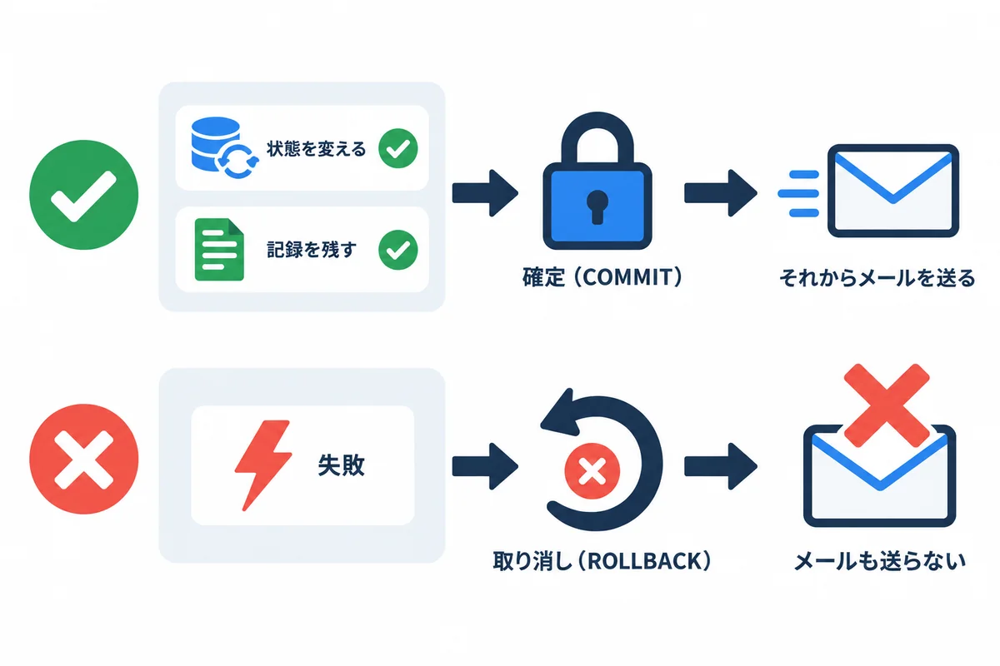
メールは、一度送ると取り消せません。もし「メールを送った後に、保存が失敗して取り消された」ら、承認されていないのに、次の人に承認のお願いが届いてしまいます。_mail 関数は、transaction.on_commit で、保存が確定した後に送るようにしています。
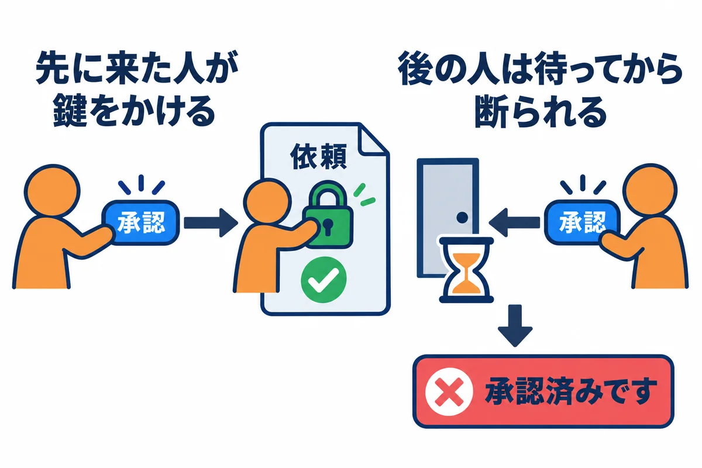
承認のボタンを 2 回続けて押したり、同じ URL を 2 つの窓で開いて同時に押したりすると、2 つのお願いが同時に届くことがあります。select_for_update() は、データベースのその行に鍵をかけ、先に来たお願いの処理が終わるまで、後のお願いを待たせます。後のお願いは、鍵が外れてから状態を読み直すので、「承認済みです」で断られます。
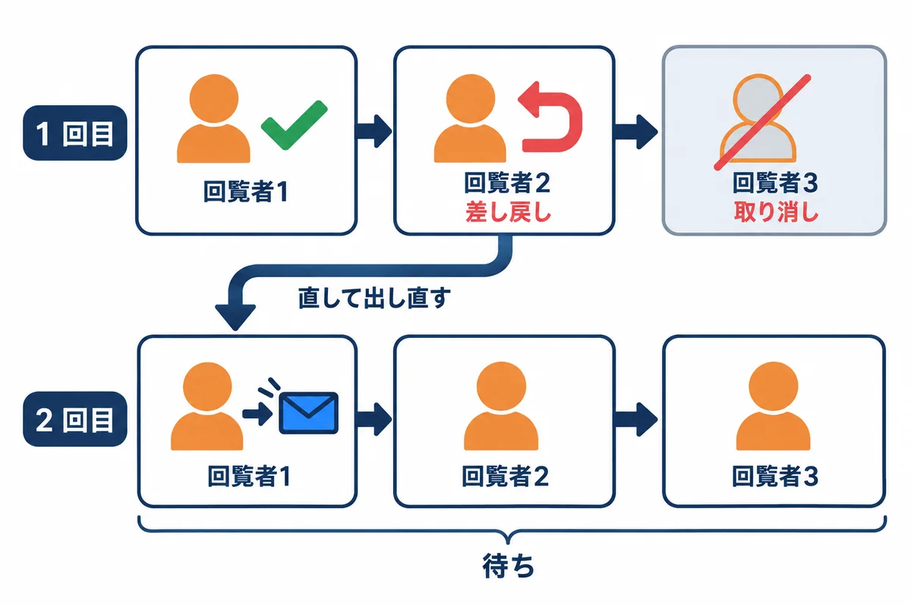
できない操作（完了した依頼を引き戻す、ほかの人の依頼を取り下げる、など）は、WorkflowError を起こして断ります。文は、そのまま画面に出せる日本語にしています。「画面にボタンを出さない」だけでは足りません。 ボタンが無くても、API に直接お願いを送ることはできるので、サーバーで必ず確かめます（10）。
承認者は、アプリにログインせず、メールの URL から承認します。URL の中の推測できない文字列が、本人の印になります（04 の 6 章）。
| 決まり | 作り方（services.py） |
|---|---|
| 推測できない | secrets.token_urlsafe(32) |
| データベースが盗まれても、URL は分からない | 文字列そのものではなく、指紋（SHA-256）だけを token_hash に保存 |
| 1 回だけ使える | 決めたら decision が「承認」「差し戻し」になる。もう一度開くと「承認済みです」 |
| 14 日で使えなくなる | token_expires_at を過ぎたら「期限が切れています」 |
| 引き戻したら使えなくなる | decision を「取り消し」にする。開くと「依頼者により引き戻されました」 |
| 送り直したら、前の URL は使えない | 新しい指紋で上書きする |
指紋を消さずに残す理由: 最初、決めたときに指紋を消す作りにしていたら、自動のテスト（11 章）が「使い済みの URL を開くと、『承認済みです』ではなく『この URL は使えません』になる」ことを見つけました。指紋を残し、
decisionで理由を見分けるように直しました。テストを書いておくと、こういう食い違いに、動かす前に気付けます。
templates/workflow/mail/approval_request.txt:
{{ step.approver.name }} さん
次の依頼の、承認をお願いします。（回覧者{{ step.order }}）
件名: {{ r.title }}
依頼者: {{ r.requester.name }}（{{ r.requester.dept }}）
希望の納期: {{ r.due_date|date:"Y-m-d" }}
下の URL を開いて、「承認」か「差し戻し」を選んでください。
{{ url }}
・この URL は、あなただけのものです。ほかの人に転送しないでください。
・この URL は 1 回だけ使えます。{{ days }} 日で使えなくなります。
実際に送られたメール（開発用のパソコンで、sent_mail\ に書かれた物。件名と本文）:
Subject: 【依頼・承認】承認のお願い: 検査用の治具の製作
From: noreply@example.com
To: 012346@example.com
佐藤 花子 さん
次の依頼の、承認をお願いします。（回覧者1）
件名: 検査用の治具の製作
依頼者: 山田 太郎（設計部）
希望の納期: 2026-11-30
下の URL を開いて、「承認」か「差し戻し」を選んでください。
http://127.0.0.1:8000/approve/eMFDHNzld3lgRKV02_4w1oXTHWig1BabLZGNHXwjOBI/
・この URL は、あなただけのものです。ほかの人に転送しないでください。
・この URL は 1 回だけ使えます。14 日で使えなくなります。
（URL の文字列は、送るたびに変わります。この URL は、もう使えません。ファイルの中では、件名は =?utf-8?b?…?= という形（日本語を英数字だけで表す決まり）で書かれていて、メールソフトが元の日本語に戻して表示します。）
workflow/approve_views.py:
"""メールの URL から開く、承認の画面。ログインは要らない（URL の文字列が、本人の印になる）"""
from django.shortcuts import render
from django.views.decorators.http import require_http_methods
from . import services
@require_http_methods(["GET", "POST"])
def approve_page(request, token: str):
if request.method == "POST":
try:
if request.POST.get("decision") == "approve":
r = services.approve(token)
message = f"「{r.title}」を承認しました。"
else:
r = services.return_request(token, request.POST.get("comment", ""))
message = f"「{r.title}」を差し戻しました。"
except services.WorkflowError as e:
return render(request, "workflow/approve_result.html", {"message": str(e), "ok": False}, status=400)
return render(request, "workflow/approve_result.html", {"message": message, "ok": True})
check = services.check_token(token)
if check.step is None:
return render(request, "workflow/approve_result.html", {"message": check.message, "ok": False}, status=410)
r = check.step.request
return render(request, "workflow/approve.html", {"step": check.step, "r": r, "attachments": r.attachments.all()})
templates/workflow/approve.html:
{% extends "workflow/base.html" %}
{% block title %}承認 - {{ r.title }}{% endblock %}
{% block main %}
<h1>承認のお願い（回覧者{{ step.order }}）</h1>
<p class="hint">{{ step.approver.name }} さん、内容を確かめて、「承認」か「差し戻し」を選んでください。</p>
<table class="kv">
<tr><th>件名</th><td>{{ r.title }}</td></tr>
<tr><th>依頼者</th><td>{{ r.requester.name }}（{{ r.requester.dept }}）</td></tr>
<tr><th>希望の納期</th><td>{{ r.due_date|date:"Y-m-d" }}</td></tr>
<tr><th>内容</th><td>{{ r.detail|linebreaksbr }}</td></tr>
<tr>
<th>添付</th>
<td>
{% for a in attachments %}{{ a.original_name }}{% if not forloop.last %}、{% endif %}{% empty %}なし{% endfor %}
</td>
</tr>
{% if r.return_comments %}<tr><th>前の差し戻し</th><td>{{ r.return_comments|linebreaksbr }}</td></tr>{% endif %}
</table>
{% if r.drawing %}
<h2>図面</h2>
<svg class="pad" viewBox="0 0 {{ r.drawing.widthMm }} {{ r.drawing.heightMm }}">
{% for s in r.drawing.shapes %}
{% if s.kind == "rect" %}
<rect x="{{ s.x }}" y="{{ s.y }}" width="{{ s.width }}" height="{{ s.height }}" />
{% endif %}
{% endfor %}
</svg>
{% endif %}
<form method="post" class="decide">
{% csrf_token %}
<label for="comment">差し戻すときの理由</label>
<textarea id="comment" name="comment" rows="3" placeholder="例: 寸法を追記してください"></textarea>
<div class="actions">
<button type="submit" name="decision" value="return" class="btn-secondary">差し戻し</button>
<button type="submit" name="decision" value="approve" class="btn-primary">承認</button>
</div>
</form>
{% endblock %}
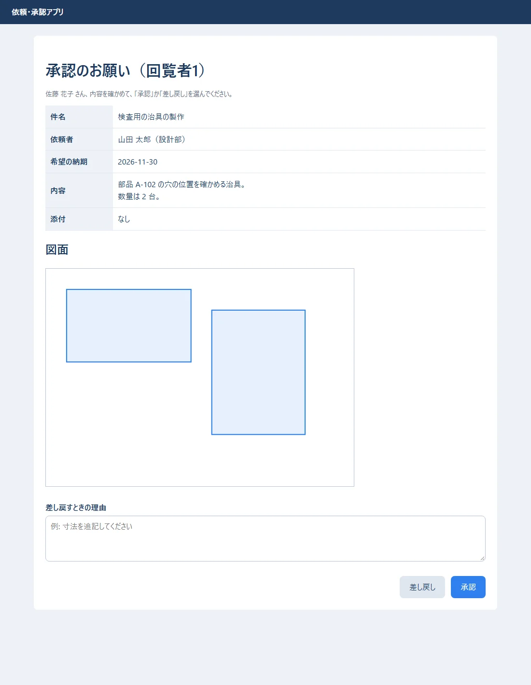
「承認」を押したとき・同じ URL をもう一度開いたとき:
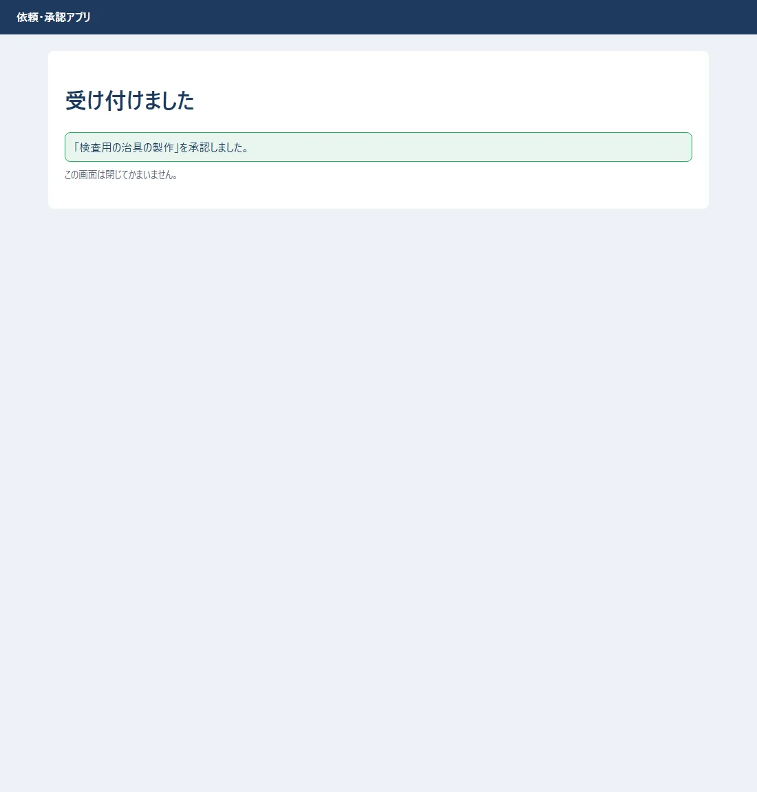
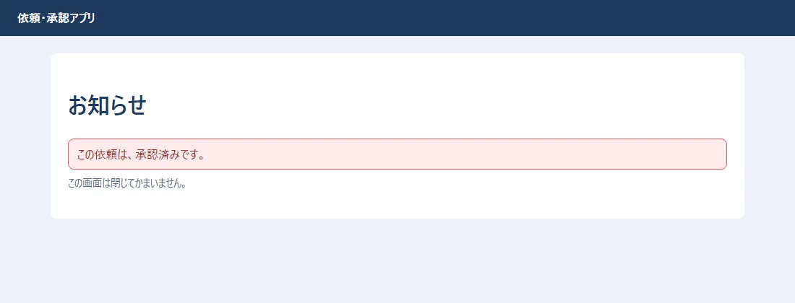
2 人目（回覧者 2）が、理由を書いて「差し戻し」を押したとき:
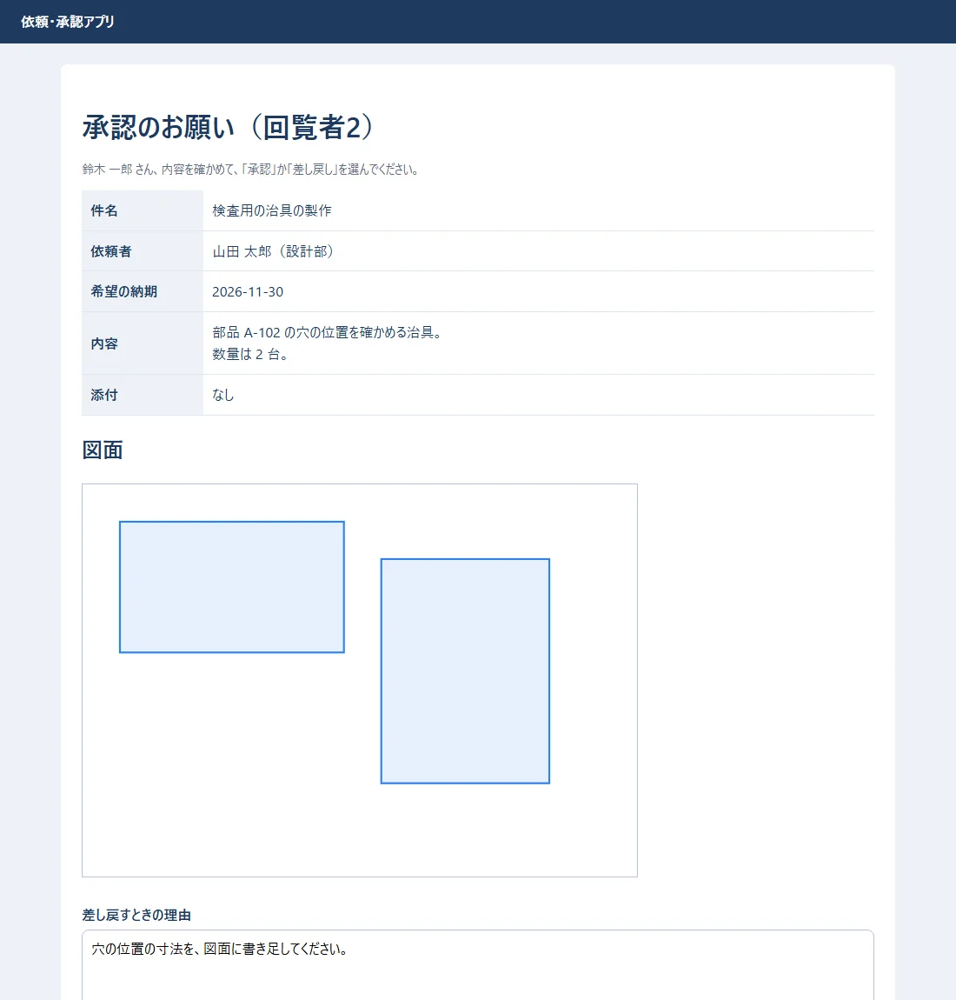
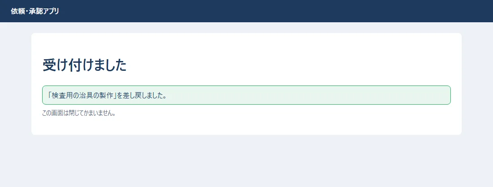
依頼者に届いたメール（本文）:
山田 太郎 さん
依頼「検査用の治具の製作」が、差し戻されました。
【11/02 00:12 回覧者2 鈴木 一郎】穴の位置の寸法を、図面に書き足してください。
アプリで内容を直して、出し直してください。
管理画面で、この依頼を開くと、回覧と記録が残っています（管理画面からは変えられないようにしてある）。
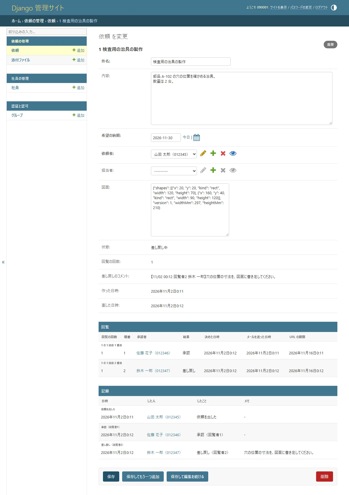
{% csrf_token %}）で、ほかのサイトから勝手に送られるのを防いでいます（10）。POST で送ります。GET（URL を開くだけ）で承認できる作りにすると、メールのウイルスの検査などが URL を開いただけで、承認されてしまうことがあります。workflow/validators.py:
"""外から来た物（図面の JSON・添付ファイル）を確かめる。画面の確かめとは別に、必ずサーバーでも確かめる"""
import json
from django.core.exceptions import ValidationError
MAX_DRAWING_BYTES = 5 * 1024 * 1024
MAX_FILE_BYTES = 10 * 1024 * 1024
SHAPE_KINDS = {"line", "rect", "text"}
# ファイルの先頭の数バイトで、本当の種類を見分ける（名前の拡張子は、いくらでもごまかせる）
SIGNATURES = {
".jpg": [b"\xff\xd8\xff"],
".jpeg": [b"\xff\xd8\xff"],
".png": [b"\x89PNG\r\n\x1a\n"],
".pdf": [b"%PDF-"],
}
def validate_drawing(value) -> None:
if value is None:
return
if len(json.dumps(value, ensure_ascii=False).encode()) > MAX_DRAWING_BYTES:
raise ValidationError("図面は 5MB までです。")
if not isinstance(value, dict) or value.get("version") != 1 or not isinstance(value.get("shapes"), list):
raise ValidationError("図面の形が違います。")
for shape in value["shapes"]:
if not isinstance(shape, dict) or shape.get("kind") not in SHAPE_KINDS:
raise ValidationError("図面に、知らない図形が入っています。")
def validate_upload(name: str, head: bytes, size: int) -> None:
ext = "." + name.rsplit(".", 1)[-1].lower() if "." in name else ""
if ext not in SIGNATURES:
raise ValidationError("添付できるのは JPG・PNG・PDF だけです。")
if size > MAX_FILE_BYTES:
raise ValidationError("添付ファイルは 1 つ 10MB までです。")
if not any(head.startswith(sig) for sig in SIGNATURES[ext]):
raise ValidationError("ファイルの中身が、拡張子と合いません。")
.pdf と名前を付けて送ることもできるので、中身の先頭の数バイト（ファイルの種類ごとに決まった印）も確かめます。workflow/api.py:
"""React の画面が呼ぶ API（JSON）。状態を変える処理は services に任せる"""
from django.contrib.auth import get_user_model
from django.core.exceptions import ValidationError as DjangoValidationError
from django.db.models import Count, Q
from django.http import FileResponse
from django.shortcuts import get_object_or_404
from rest_framework import status
from rest_framework.decorators import api_view, parser_classes
from rest_framework.exceptions import PermissionDenied
from rest_framework.parsers import MultiPartParser
from rest_framework.response import Response
from . import services
from .models import Attachment, Request
from .serializers import (
AttachmentSerializer,
RequestDetailSerializer,
RequestInputSerializer,
RequestListSerializer,
)
from .validators import validate_upload
User = get_user_model()
def _visible_requests(user):
"""その人が見てよい依頼: 自分が出した・回覧に入っている・担当者と管理者は全部"""
qs = Request.objects.select_related("requester", "assignee").prefetch_related("steps__approver")
if user.role in (User.Role.WORKER, User.Role.ADMIN):
return qs
return qs.filter(Q(requester=user) | Q(steps__approver=user)).distinct()
def _error(e: Exception) -> Response:
return Response({"detail": str(e)}, status=status.HTTP_400_BAD_REQUEST)
@api_view(["GET", "POST"])
def requests_view(request):
if request.method == "GET":
qs = _visible_requests(request.user)
if request.query_params.get("mine") == "1":
qs = qs.filter(requester=request.user)
return Response(RequestListSerializer(qs, many=True).data)
data = RequestInputSerializer(data=request.data)
data.is_valid(raise_exception=True)
try:
r = services.submit(request.user, **data.validated_data)
except services.WorkflowError as e:
return _error(e)
return Response({"id": r.pk}, status=status.HTTP_201_CREATED)
@api_view(["GET"])
def request_detail(request, pk: int):
r = get_object_or_404(_visible_requests(request.user).prefetch_related("attachments", "histories__actor"), pk=pk)
return Response(RequestDetailSerializer(r).data)
@api_view(["POST"])
def request_action(request, pk: int, action: str):
"""引き戻し・出し直し・取り下げ・担当・完了"""
try:
if action == "pull-back":
services.pull_back(request.user, pk)
elif action == "withdraw":
services.withdraw(request.user, pk)
elif action == "resubmit":
data = RequestInputSerializer(data=request.data)
data.is_valid(raise_exception=True)
services.resubmit(request.user, pk, **data.validated_data)
elif action == "assign":
services.assign(request.user, pk)
elif action == "complete":
services.complete(request.user, pk)
else:
return Response({"detail": "知らない操作です。"}, status=status.HTTP_404_NOT_FOUND)
except Request.DoesNotExist:
return Response({"detail": "依頼がありません。"}, status=status.HTTP_404_NOT_FOUND)
except services.WorkflowError as e:
return _error(e)
return Response({"ok": True})
@api_view(["POST"])
@parser_classes([MultiPartParser])
def upload_attachment(request, pk: int):
r = get_object_or_404(Request, pk=pk, requester=request.user)
if r.status not in (Request.Status.CIRCULATING, Request.Status.RETURNED, Request.Status.PULLED_BACK):
return Response({"detail": "この状態の依頼には、添付できません。"}, status=status.HTTP_400_BAD_REQUEST)
f = request.FILES.get("file")
if f is None:
return Response({"detail": "ファイルがありません。"}, status=status.HTTP_400_BAD_REQUEST)
head = f.read(8)
f.seek(0)
try:
validate_upload(f.name, head, f.size)
except DjangoValidationError as e:
return Response({"detail": e.messages[0]}, status=status.HTTP_400_BAD_REQUEST)
a = Attachment.objects.create(request=r, file=f, original_name=f.name, size=f.size)
return Response(AttachmentSerializer(a).data, status=status.HTTP_201_CREATED)
@api_view(["GET"])
def download_attachment(request, attachment_id: int):
a = get_object_or_404(Attachment.objects.select_related("request"), pk=attachment_id)
if not _visible_requests(request.user).filter(pk=a.request_id).exists():
raise PermissionDenied("この添付ファイルは見られません。")
return FileResponse(a.file.open("rb"), as_attachment=True, filename=a.original_name)
@api_view(["GET"])
def employees(request):
"""回覧者を選ぶための社員の検索（氏名・所属・役職の一部）"""
q = request.query_params.get("q", "").strip()
qs = User.objects.filter(is_active=True).exclude(pk=request.user.pk)
if q:
qs = qs.filter(Q(name__icontains=q) | Q(dept__icontains=q) | Q(job_title__icontains=q))
return Response([{"id": u.pk, "name": u.name, "dept": u.dept, "job_title": u.job_title} for u in qs[:20]])
@api_view(["GET"])
def stats(request):
"""グラフの元: 状態ごとの件数と、担当者ごとの完了の件数"""
by_status = Request.objects.values("status").annotate(n=Count("id"))
labels = dict(Request.Status.choices)
done_by = (
Request.objects.filter(status=Request.Status.DONE, assignee__isnull=False)
.values("assignee__name").annotate(n=Count("id")).order_by("-n")
)
return Response({
"by_status": [{"status": labels[row["status"]], "count": row["n"]} for row in by_status],
"done_by_assignee": [{"name": row["assignee__name"], "count": row["n"]} for row in done_by],
})
@api_view(["GET"])
def me(request):
u = request.user
return Response({"id": u.pk, "employee_no": u.employee_no, "name": u.name, "role": u.role})
config/urls.py:
from django.contrib import admin
from django.urls import path
from accounts import views as accounts_views
from workflow import api, approve_views
urlpatterns = [
path("admin/", admin.site.urls),
# メールの URL から開く承認の画面（ログインは要らない）
path("approve/<str:token>/", approve_views.approve_page, name="approve"),
# React の画面が呼ぶ API
path("api/login/", accounts_views.login_view),
path("api/logout/", accounts_views.logout_view),
path("api/me/", api.me),
path("api/requests/", api.requests_view),
path("api/requests/<int:pk>/", api.request_detail),
path("api/requests/<int:pk>/attachments/", api.upload_attachment),
path("api/requests/<int:pk>/<str:action>/", api.request_action),
path("api/attachments/<int:attachment_id>/", api.download_attachment),
path("api/employees/", api.employees),
path("api/stats/", api.stats),
]
| URL | 方法 | 何をする | だれが |
|---|---|---|---|
/api/login/・/api/logout/ |
POST | ログイン・ログアウト | だれでも |
/api/me/ |
GET | 自分の名前と権限 | ログインした人 |
/api/requests/ |
GET・POST | 見てよい依頼の一覧（?mine=1 で自分の依頼だけ）・依頼を出す |
ログインした人 |
/api/requests/1/ |
GET | 依頼の詳細（回覧・添付・記録） | 見てよい人 |
/api/requests/1/pull-back/ など |
POST | 引き戻し・出し直し・取り下げ・担当・完了 | services が確かめる |
/api/requests/1/attachments/ |
POST | 添付ファイルを付ける | 依頼者 |
/api/attachments/5/ |
GET | 添付ファイルを取り出す | 見てよい人 |
/api/employees/?q=設計 |
GET | 回覧者を選ぶための社員の検索 | ログインした人 |
/api/stats/ |
GET | グラフの元（状態ごとの件数・担当者ごとの完了の件数） | ログインした人 |
/approve/文字列/ |
GET・POST | 承認の画面 | URL を持っている人 |
_visible_requests の 1 か所で決めています（自分が出した・回覧に入っている・担当者と管理者は全部）。一覧・詳細・添付の取り出しが、全部ここを通るので、見せてはいけない物を見せる漏れが起きにくくなります。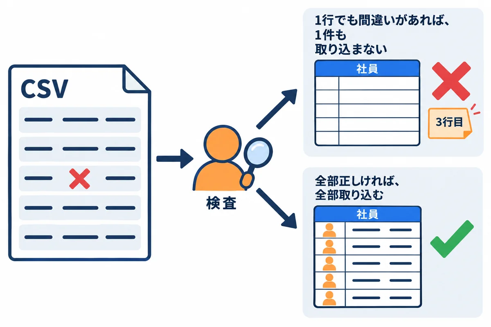
accounts/management/commands/import_employees.py:
"""社員の CSV を取り込む。使い方: python manage.py import_employees 社員.csv [--dry-run]
・1 行でも間違いがあれば、1 件も取り込まない（全部か、何もしないか）
・同じ従業員番号の社員がいれば、氏名などを書きかえる。いなければ作る（パスワードは未設定）
・CSV は Excel の「CSV UTF-8（コンマ区切り）」で保存した物（04 の 5 章）
"""
import csv
import re
from pathlib import Path
from django.core.management.base import BaseCommand, CommandError
from django.core.validators import validate_email
from django.core.exceptions import ValidationError
from django.db import transaction
from accounts.models import User
COLUMNS = ["従業員番号", "氏名", "所属", "役職", "メールアドレス"]
class Command(BaseCommand):
help = "社員の CSV を取り込む"
def add_arguments(self, parser):
parser.add_argument("path")
parser.add_argument("--dry-run", action="store_true", help="確かめるだけで、取り込まない")
def handle(self, path, dry_run, **options):
rows, errors = self.read(Path(path))
if errors:
for e in errors:
self.stderr.write(f"× {e}")
raise CommandError(f"{len(errors)} 件の間違いがあるので、取り込みませんでした。")
if dry_run:
self.stdout.write(f"間違いはありません（{len(rows)} 件）。--dry-run なので、取り込んでいません。")
return
created = updated = 0
with transaction.atomic():
for no, name, dept, title, email in rows:
_, is_new = User.objects.update_or_create(
employee_no=no, defaults={"name": name, "dept": dept, "job_title": title, "email": email}
)
created += is_new
updated += not is_new
self.stdout.write(self.style.SUCCESS(f"取り込みました（新しく {created} 件・書きかえ {updated} 件）。"))
def read(self, path: Path):
rows, errors, seen = [], [], set()
try:
with path.open(encoding="utf-8-sig", newline="") as f:
reader = csv.DictReader(f)
if reader.fieldnames != COLUMNS:
return [], [f"1 行目の見出しは {','.join(COLUMNS)} にしてください（今: {reader.fieldnames}）"]
for n, row in enumerate(reader, start=2):
no, name, dept, title, email = (row[c].strip() for c in COLUMNS)
if not re.fullmatch(r"\d{6}", no):
errors.append(f"{n} 行目: 従業員番号は 6 桁の数字にしてください（{no!r}）")
elif no in seen:
errors.append(f"{n} 行目: 従業員番号 {no} が 2 回出てきます")
elif not name:
errors.append(f"{n} 行目: 氏名が空です")
else:
try:
validate_email(email)
except ValidationError:
errors.append(f"{n} 行目: メールアドレスの形が違います（{email!r}）")
continue
seen.add(no)
rows.append((no, name, dept, title, email))
except UnicodeDecodeError:
return [], ["文字コードが UTF-8 ではありません。Excel で「CSV UTF-8」として保存し直してください。"]
return rows, errors
間違いのある CSV（sample_data\employees_bad.csv）と、正しい CSV（sample_data\employees.csv）で動かした結果:
PS> .\dev.ps1 import_employees sample_data\employees_bad.csv
× 3 行目: 従業員番号は 6 桁の数字にしてください（'30004'）
× 4 行目: メールアドレスの形が違います（'kato.example.com'）
CommandError: 2 件の間違いがあるので、取り込みませんでした。
PS> .\dev.ps1 import_employees sample_data\employees.csv --dry-run
間違いはありません（3 件）。--dry-run なので、取り込んでいません。
PS> .\dev.ps1 import_employees sample_data\employees.csv
取り込みました（新しく 2 件・書きかえ 1 件）。
csv_import.py と同じ確かめ方を、Django の管理コマンドにしました。サーバーでは .\manage.ps1 import_employees D:\work\社員.csv のように動かします（onprem の 05 の 9.4）。--dry-run で、取り込む前に間違いだけを確かめられます。.\manage.ps1 changepassword 012345 で決める、など）は、会社の決まりに合わせます。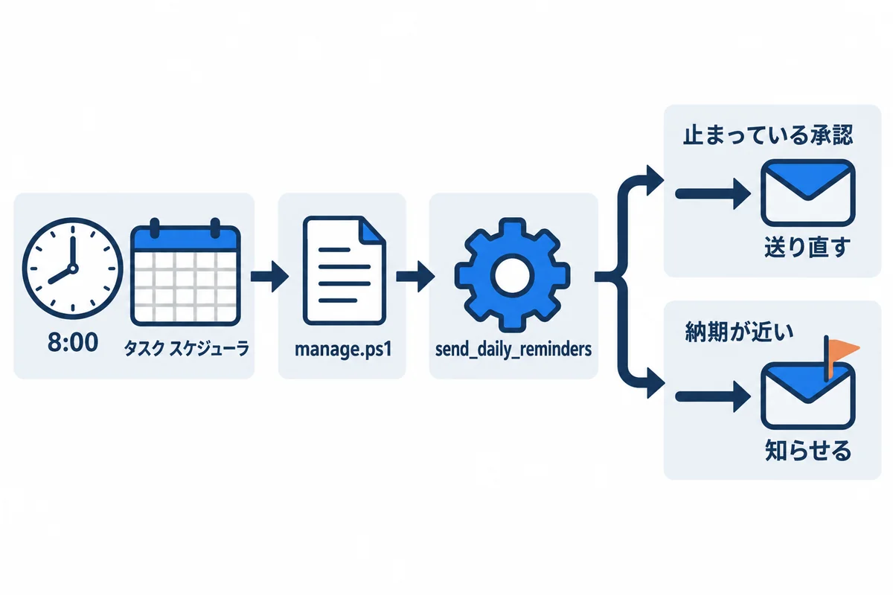
workflow/management/commands/send_daily_reminders.py:
"""毎朝 8:00 の通知。サーバーでは、タスク スケジューラが manage.ps1 から動かす（onprem の 05 の 12.1）
1. 承認のお願いを送ってから 3 日たっても止まっている回覧 → 承認者に送り直す（前の URL は使えなくなる）
2. 希望の納期まで 3 日以内なのに、まだ終わっていない依頼 → 依頼者と担当者に知らせる
"""
from datetime import timedelta
from django.core.management.base import BaseCommand
from django.utils import timezone
from workflow import services
from workflow.models import Request, Step
STALE_DAYS = 3
DUE_SOON_DAYS = 3
class Command(BaseCommand):
help = "毎朝の通知（止まっている承認・納期の近い依頼）"
def handle(self, **options):
now = timezone.now()
stale = Step.objects.filter(
decision=Step.Decision.WAITING,
request__status=Request.Status.CIRCULATING,
sent_at__lt=now - timedelta(days=STALE_DAYS),
)
resent = 0
for step in stale:
services.resend(None, step.pk)
resent += 1
today = timezone.localdate()
due_soon = Request.objects.filter(
status__in=[Request.Status.APPROVED, Request.Status.IN_PROGRESS],
due_date__lte=today + timedelta(days=DUE_SOON_DAYS),
).select_related("requester", "assignee")
for r in due_soon:
services.notify_due_soon(r)
self.stdout.write(f"送り直した承認のお願い: {resent} 件 / 納期が近い依頼: {len(due_soon)} 件")
動かした結果（練習のデータでは、まだ対象が無い）:
PS> .\dev.ps1 send_daily_reminders
送り直した承認のお願い: 0 件 / 納期が近い依頼: 0 件
会社のサーバーでは、onprem の 05 の 12.1 のとおり、タスク スケジューラに「毎日 8:00 に manage.ps1 send_daily_reminders」を登録します。
workflow/tests.py に、18 のテストがあります（全部は、練習のファイルを見てください）。
| テストの名前 | 確かめること |
|---|---|
| 出すと1人目にメールが届き回覧中になる | 依頼を出したときの動き |
| 全員が承認すると回覧完了になり担当者に知らせる | 回覧が最後まで進む |
| URLは1回しか使えない・期限が切れたURLは使えない | 6 章の決まり |
| 差し戻すとコメントが追記され依頼者にメールが届く・理由の無い差し戻しは断る | 差し戻しの決まり |
| 引き戻すと承認待ちの人のURLが使えなくなる | 引き戻しの決まり |
| 出し直すと最初の回覧者からやり直す | round の決まり |
| 回覧中はほかの人の依頼を引き戻せない・回覧者の決まり | できない操作を断る |
| 検証ではメールの宛先を書きかえる | MAIL_REDIRECT_TO |
| ログインしないと403・出すと番号が返りほかの人からは見えない | API の決まり |
| 図面の形が違えば断る・拡張子と中身が違うファイルは断る | 7 章の確かめ |
| 件名に改行は入れられない | 細工した送信を断る（10 の巻で足した） |
| 正しいCSVは取り込む・1行でも間違いがあれば1件も取り込まない | 9 章の決まり |
テストの書き方の例（URL は 1 回しか使えない）:
def test_URLは1回しか使えない(self):
self.submit()
token = token_in(mail.outbox[0]) # 送られたメールから、URL の文字列を取り出す
self.act(services.approve, token) # 1 回目は承認できる
with self.assertRaisesMessage(services.WorkflowError, "承認済みです"):
services.approve(token) # 2 回目は断られる
mail.outbox という箱にたまります。送られたはずのメールの宛先や本文を確かめられます。captureOnCommitCallbacks(execute=True) は、「保存が確定した後に送るメール」（5.2）を、テストの中でも送らせるための書き方です。.\dev.ps1 test --noinput
PostgreSQL の上で動かした結果（最後の所）:
Ran 18 tests in 55.856s
OK
| 症状 | 原因 | 直し方 |
|---|---|---|
RuntimeError: 環境変数 DB_NAME がありません |
dev.env が無い／python manage.py を直接動かした |
.\dev.ps1 から動かす |
password authentication failed for user "webapp_dev_app" |
dev.env のパスワードが違う |
2.1 で決めた物にする |
テストが permission denied to create database |
開発用のユーザーに CREATEDB が無い |
2.1 |
.\dev.ps1 test -v 2 で、テストが 1 つも見つからない |
PowerShell が -v を受け取った |
--verbosity 2 |
dev.ps1 で、パスワードが窓に残る・途中の行が動かない |
BOM 無しで保存した | 「UTF-8 (BOM 付き)」で保存し直す |
| メールが届かない（開発中） | 開発中は、メールはファイルに書かれる | backend\sent_mail\ を見る |
| 承認の画面で「この URL は使えません」 | URL の打ち間違い・送り直されて古い URL になった | 一番新しいメールの URL を開く |
承認の画面で 403 CSRF |
フォームに {% csrf_token %} が無い／クッキーが受け取られていない |
テンプレートを見る。HTTP なら CSRF_COOKIE_SECURE = False（onprem の 05 の 8 章） |
AUTH_USER_MODEL を後から変えて、migrate がエラー |
ユーザーのモデルは、最初の migrate の前に決める |
開発用なら、データベースを作り直す |
| 添付の保存で「ファイルの中身が、拡張子と合いません」 | 名前だけ変えたファイル（PNG を .jpg にした、など） | 元の形式のまま付ける |
services.py に、「回覧完了の依頼を、管理者が回覧中に戻す」操作を足して、テストも書いてください（ヒント：WorkflowError で、管理者以外を断る）。send_daily_reminders で、「回覧中のまま 7 日たった依頼」を管理者に知らせてください。.xlsx を足してください（ヒント：.xlsx の先頭は PK。ただし、zip の形式の物は、全部 PK で始まることに注意）。| 用語 | 短い説明 | 章 |
|---|---|---|
| dev.ps1・dev.env | 開発用の設定を読み込んで manage.py を動かす道具／その設定 | 2 |
| AUTH_USER_MODEL | 自分で作ったユーザーのモデル | 4 |
| JSONField | JSON をそのまま入れる項目 | 4 |
| services | 状態を変える処理を集めた所 | 5 |
| transaction.atomic・on_commit | 全部か何もしないか／確定してから動かす | 5 |
| select_for_update | 行に鍵をかける | 5 |
| round | 何回目の回覧か | 5 |
| token・token_hash | URL の文字列／その指紋 | 6 |
| CSRF の札 | ほかのサイトからの勝手な送信を防ぐ印 | 6 |
| 管理コマンド | manage.py コマンド で動かす、自分で作った処理 |
9・10 |
| mail.outbox | テストの中で、送られたメールがたまる箱 | 11 |